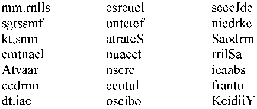
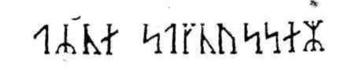
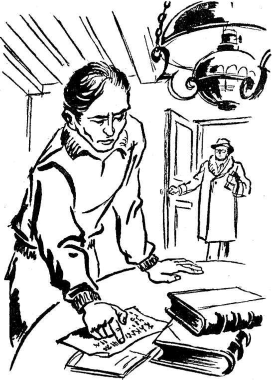
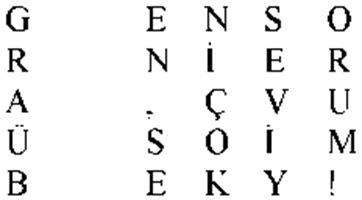

İçeri girdiğim zaman, dayım kaşlarını çatmış:
- Bunun eski İzlanda yazısı olduğuna eminim! Diye söyleniyordu. Fakat, bu satırların arasında bir sır saklı. Ya bu sırrı bulacağım... Yahut da...
Sert bir el hareketiyle konuşmasını yarıda kesti. Bana:
- Şuraya otur! dedi. Söyleyeceklerimi yaz!...
Birkaç saniye içinde her şeyi hazırladım. Dayım:
- Bu eski İzlanda yazısındaki her harfin, Almanca karşılığını söyleyeceğim, diye sözlerine devam etti. Sonra ne yapacağımızı düşünürüz. Fakat, Allah’ını seversen dikkatli ol!
Dayım yazdırmağa başladı. Yanılmamak için bütün dikkatimi sarf ediyordum. İşte anlaşılması imkânsız yazının tam örneği:

Yazma işi sona erince dayım, önümdeki kâğıdı sert bir hareketle çekip aldı. Uzun bir süre dikkatle tetkik etti.
Mütemadiyen:
- Bu, ne olabilir acaba? diye mırıldanıyordu.
Ben de ona fikir verecek burumda değildim. Zaten bana bir şey sormuyordu. Kendi kendine konuşmakla yetiniyordu:
- İşte hakikî şifreli bir yazı!... Anlatılmak istenen şey, kasten karıştırılmış harflerin arasındadır. Bu harfleri belirli bir düzen içinde yeniden dizebilirsek, manası olan bir cümle meydana getirmiş oluruz. Bu karmakarışık harflerin arasında çok önemli bir keşfin izahatının mevcut olabileceğini düşünüyorum da...
Bana kalırsa, bu harflerin arasında hiçbir şey gizli değildi. Fakat, susmayı tercih ediyordum.
Dayım, kâğıtla kitabı karıştırdı. Sonra:
- Bu iki yazı aynı elden çıkmamış, dedi. Kâğıt, kitaptan sonra yazılmış. Bunu kat'iyetle iddia edebilirim. Şifreli yazının ilk harfi çift (M). Hâlbuki (M) harfi İzlanda alfabesine XIV. üncü asırda girmiştir. Kitapta (M) harfine rastlamak imkânsız. Böylece, şifreli yazıyla kitabın yazılışı arasında en aşağı iki asır geçmiş olduğunu söyleyebilirim.
Bu izahat bana oldukça mantıkî göründü. Dayım:
- Böylece, bu kitabı ele geçirenlerden birinin bu şifreli yazıyı yazmış olduğu sonucuna varıyorum, diye sözlerine devam etti. Fakat, bu şahıs kimdir? Acaba adını kâğıdın bir köşesine yazmış mıdır?
Dayım, gözlüklerini çıkarttı. Kuvvetlice bir büyüteç aldı. Kitabın ilk sayfalarını dikkatle gözden geçirdi. ikinci sayfanın arkasında, başlığın altında mürekkep lekesine benzeyen incecik, silik bir yazı keşfetti. Bir hayli uğraştıktan sonra yazıyı okuyabildi:

- Arne Saknussemm! Bir İzlandalı daha! XVI. asırda yaşamış olan şöhretli bir simyacı!...
Dayıma hayranlıkla bakıyordum. O, heyecanla devam etti:
- Avicenne, Bacon, Lulle, Paracelse... Bütün bu simyacılar, devirlerinin en ünlü, en hakikî bilginleriydi.. Hayranlığımızı gizle-yemediğimiz çeşitli mühim keşifler yapmışlardır... Saknussemm de önemle bir buluşunu bu şifreli yazının arasına gizlemiş olamaz mı? Böyle olduğuna eminim! Başka türlü olmasına imkân yok!
Bu teoriyle profesörün muhayyilesi genişledikçe, genişliyordu.
Mütereddit bir sesle:
- Bu bilginin, önemli bir buluşunu şifreli bir yazının içine neden gizlemek istediğini bir türlü anlayamadım, dedim.
- Neden? Neden? Nereden bileyim? Galile de aynı şekilde hareket etmemiş miydi? Bu sırrı muhakkak öğrenmeliyiz! Şifreyi mutlaka çözeceğim!... Çözmedikçe ne yemek yiyeceğim, ne de uyuyacağım!...
Aklımdan; «Mahvoldum!...» diye geçirdim.

Dayım:
- Sen de benimle beraber çalışacaksın Axel!... diye devam etti.
Elimde olmayarak: «İyi ki iki kişilik yemek yemişim diye düşündüm.
Dayım, heyecanla:
- İlk iş olarak şifrenin anahtarını bulmalıyız, dedi. Bunun güç bir iş olduğunu zannetmiyorum...
Hayretle dayıma baktım. Fakat o konuşmasına devam etti:
- Bundan kolay bir şey olamaz. Vesikada 132 harf var. Bunun 79'u sessiz, 53'ü sesli harf... Akdeniz memleketlerinin kelimelerindeki sesli-sessiz harf nispeti de böyledir. Kuzey ülkelerinin lisanları ise sessiz harf bakımından daha zengindir. Sonuç olarak elimizdeki vesikanın Akdeniz memleketlerinden birinin lisaniyle yazıldığını söyleyebiliriz.
Bu düşünce zinciri tamamıyla mantıklıydı. Dayım, konuşmama fırsat vermeden monoloğuna devam etti:
- Şimdi en önemli noktaya geldik: Bu lisan hangisidir? Saknussemm, iyi yetişmiş, çok bilgili bir insandı. Ana lisanıyla yazmadığına göre, XVI. asırda moda olan lisanlardan biriyle yazmış olması lâzım. En kuvvetli ihtimalle, Latinceyi seçmiş olabilir. Eğer bunda başarı sağlayamazsak, İspanyolca, Fransızca, İtalyanca, Yunanca veya İbraniceyi deneyebiliriz. Fakat, XVI. asır bilginleri Latinceyi tercih ediyorlardı. Bu bakımdan, elimizdeki vesikanın Latince olduğunu ısrarla iddia edebilirim.
Bu iddiayı duyunca gayri ihtiyarî irkildim. Latince en çok sevdiğim lisanlardan biriydi. Bu karmakarışık, eğri büğrü harflerle Latincenin yazılmış olması fikrine tahammül edemiyordum. Dayım
- Latince olduğunda ısrar ediyorum, diye sözlerini tamamladı. Fakat, iyice birbirine karıştırılmış bir Latince.
İçimden: «En sonunda doğru bir söz çıktı ağzından!» diye geçirdim. «Eğer bunun içinden çıkabilirse aşkolsun!»
Dayım, yazmış olduğum kâğıdı tekrar eline alarak:
- Dikkatle tetkik etmemiz lâzım, dedi. İşte karmakarışık bir halde 132 harf. Bazı satırlarda sessiz harflerden başkası yok. Bazısında ise sesli harfler ekseriyette. Meselâ (unteief) veya (oseibo) gibi. Bu karışıklık lalettayin meydana gelmiş olamaz. Matematik bir kaideyle karıştırılmış olduğuna eminim. Bu vesika ilk önce düzgün kelime ve cümleler halinde yazılmış olmalı. Sonra, belirli bir düzen içinde kelimeler ters çevrilmiş. Bu anahtarı bulan, vesikayı, okuyabilir. Fakat, bu anahtar nedir? Axel, bu anahtarı biliyor musun?
Bu soruya verecek cevap bulamadım. Sebebi de gayet basitti. Gözüm, şöminenin üstündeki Graüben'in resmine takılmıştı. O anda Graüben'i sadece düşünüyordum. Artık itiraf etmek zorundayım ki, kısa bir süre için Altona'ya gitmiş olan dayımın vaftiz kızını, bir Almana yakışacak sükûnet ve sabırla seviyordum. Dayımdan habersiz olarak nişanlanmıştık. Jeolojiden başka hiçbir şeyden anlamayan dayıma bu mutlu olayı bildirmeyi lüzumsuz görmüştük.
Graüben sarı saçlı, mavi gözlü, sert tabiatlı, ciddî ve şirin bir genç kızdı. Sert ve ciddî oluşu, beni sevmesine engel teşkil etmiyordu. Bana gelince, onu kelimenin tam manasıyla seviyordum.
Sevgili Graüben'in resmi beni biran için hakikat âleminden, hayal âlemine sürüklemişti. Fakat, dayımın heyecanlanarak masaya vurduğu yumruğun sesiyle, tekrar hakikat âlemine dönmüştük. Dayım:
- Düşünmeğe devam edelim, diyordu. Bir cümleyi karıştırmak için ilk gelecek olan usul, kelimeleri yukarıdan aşağıya yazmaktır.
Aklımdan: «İnsanlar işleri karıştırmak için neler de düşünebiliyor!» diye geçirdim.
Dayım:
- Bu usulü denemeliyiz, diye sözlerine devam etti. Axel! Boş bir kâğıda, aklına gelen bir cümleyi yaz. Harfleri soldan sağa dizeceğine, yukarıdan aşağıya yerleştir. Sonra bunları beş veya altışar harflik gruplara ayır.
Dayımın isteğini derhal anlamıştım. Yukarıdan aşağıya şunları yazdım:

Dayım kâğıda bakmadan:
- Pekâlâ, dedi. Şimdi bunları, soldan sağa doğru sırala, itaat ettim ve şöyle bir şey elde ettim:
GENSO RNER A'ÇVTJ ÜSOİM BEKY!
Dayım kâğıdı elimden çekerek aldı ve:
- Mükemmel! dedi. İşte, öteki vesikaya benzeyen bir örnek... Sessiz ve sesli harfler, aynı karışıklık içinde beşli grupların arasına serpiştirilmiş halde... Kelimenin orta yerinde virgüle bile rastlıyoruz.
Bunlar benim için dâhiyane buluşlar değillerdir. Dayım, hararetle:
- Şimdi yazmış olduğun bu cümleyi okumaya çalışacağım, diye devam etti. Hangi cümleyi seçmiş olduğunu bilmiyorum. Fakat metodu bildiğim için, okumak çok kolay olacaktır. İlk olarak gurupların birinci harflerini alıp, yan yana dizeceğim. Sonra, ikinci ve üçüncü harfleri...
Bunları söyleyen dayım, şifreli olarak yazmış olduğum cümleyi yüksek sesle okudu:
«Graüben, seni çok seviyorum!»
Ve sonra hayretle:
- Nee! diye bağırdı. Demek, Graüben'i seviyorsun ha!
Âşıkların dalgın olduklarını bilirdim. Fakat benimki hepsinden baskındı. Graübenle aramda olanları bilmeyen dayıma bu cümleyi yazmakla büyük tedbirsizlik yapmıştım. Fakat dayım, okuduğu cümlenin manasını anlayacak durumda değildi. Kendini yaptığı işin heyecanına kaptırmıştı. Bir makine gibi:
- Aynı metodu Saknussemm'un yazmış olduğu vesikaya tatbik edelim, dedi. Yaz bakalım Axel!
İtaat ettim ve yazdım:
mmessunkaSenrA.icefdoK.segnittamurtn ecertser-
rett,rotaivsadua,ednecsedsadne lacartniiiluJsiratrac-
Sarbmutabiledmek meretarcsilucoYsleffenSnl
Yazmağa başladığım sırada, yan yana gelen bu harflerin hiçbir mana taşımadığına inanıyordum. Fakat, sona doğru bu inancım sarsıldı. Dayımın ağzından kusursuz bir Latinceyle, mükemmel bir cümlenin çıkmasını beklemeğe başladım.
Fakat, öfkeyle vurulan bir yumruk masayı sarstı. Hokkadaki mürekkep etrafa sıçradı. Kalem, elimden fırladı. Dayım:
- Hayır, bu değil! diye bağırdı. Bunun hiçbir manası yok! Sonra, çalışma odasından bir mermi gibi dışarı fırladı. Merdivenden çığ gibi yuvarlanarak aşağı kata indi. König-strasse'de bir deli gibi koşarak, gözden kayboldu.